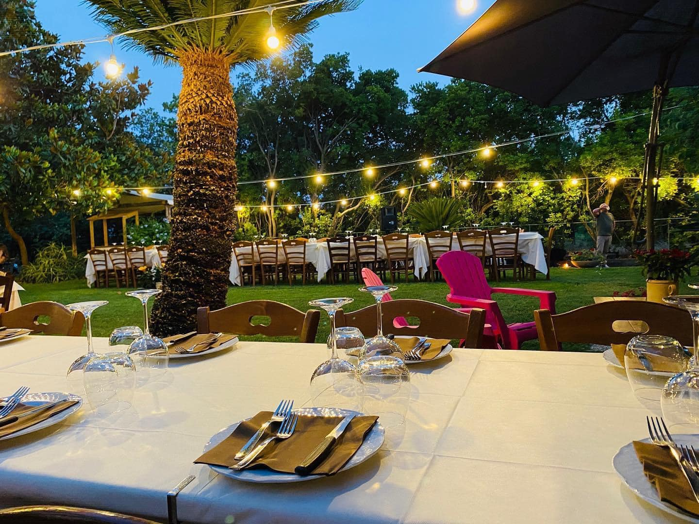
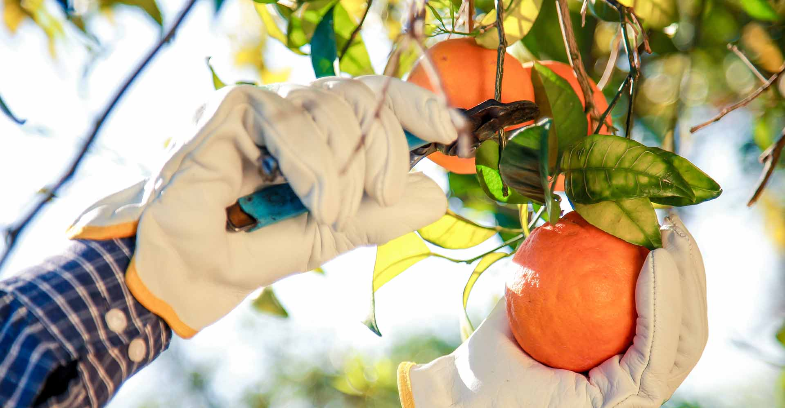
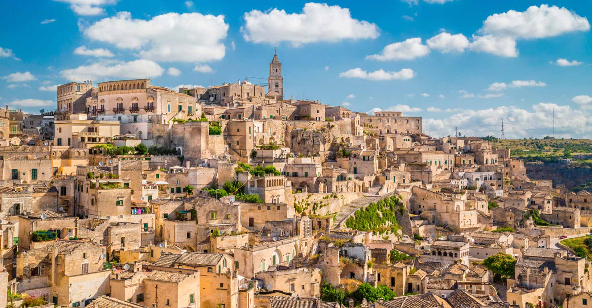
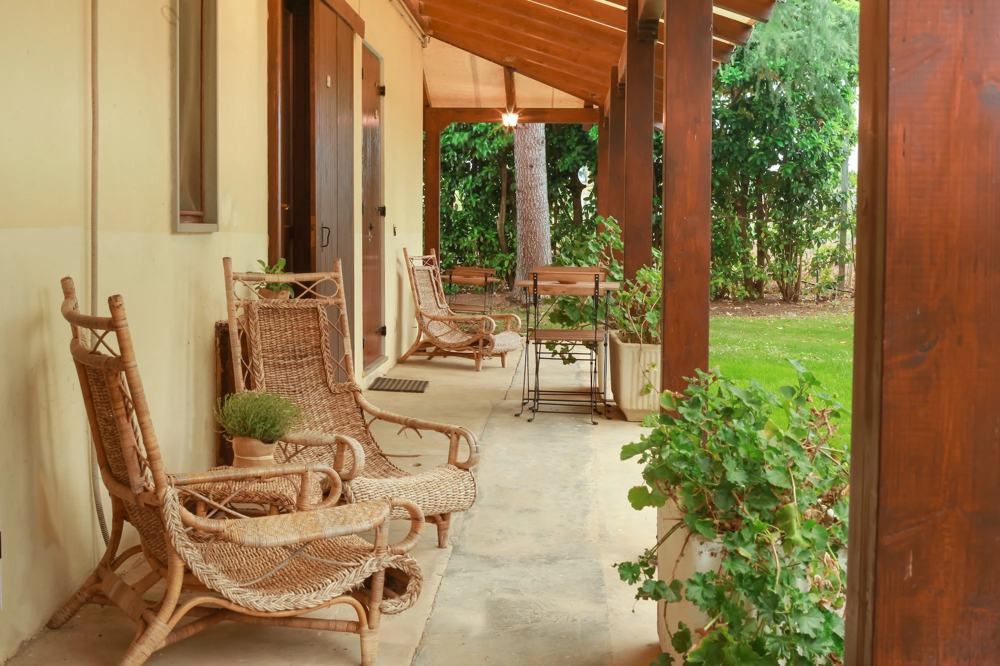
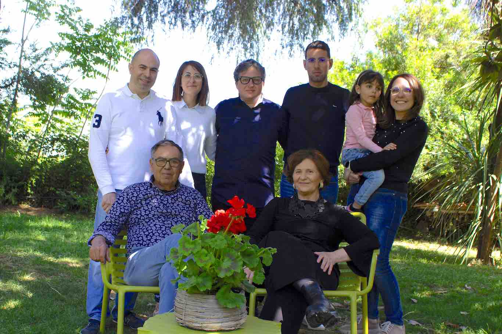
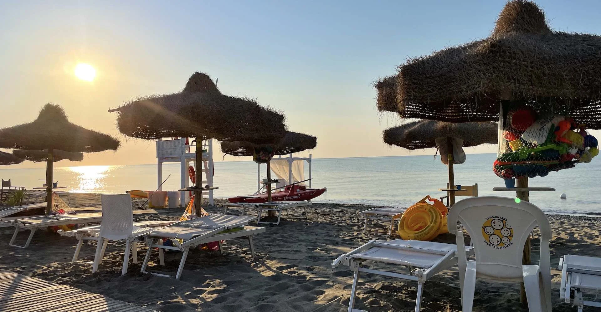
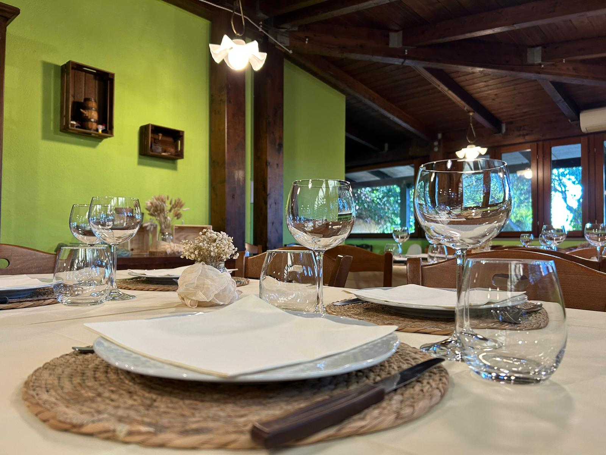
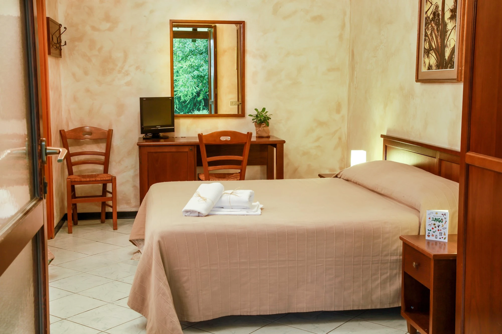

La fattoria
La meraviglia di scoprire da dove vengono le cose. Per i più piccoli, e per chi ha ancora voglia di stupirsi.
Agriturismo in Basilicata
Rotondella
Atmosfera diurna.
Una famiglia.
Una terra.
Un luogo a cui tornare.
Tra il verde della campagna e l’azzurro dello Jonio, c’è un posto dove ritrovare il proprio tempo. È Il Pago: camere che si aprono sul giardino, il profumo della cucina lucana e l’accoglienza della famiglia Bianco.
Entra nella nostra storia
Benvenutial Pago.
Un piccolo mondo, tutto da vivere.
Ci sono giornate da riempire di scoperte.
E altre da lasciare semplicemente accadere.
La meraviglia di scoprire da dove vengono le cose. Per i più piccoli, e per chi ha ancora voglia di stupirsi.

Olio extravergine, miele, confetture e frutta di stagione. Un po’ del Pago, da portare a casa.

Il mare Jonio, i borghi, la meraviglia di Matera. Parti piano: ogni strada ha qualcosa da raccontare.

Dall’inizio del Novecento, la nostra famiglia si prende cura di questa terra. Oggi ti accogliamo con la stessa semplicità: un sorriso, una tavola apparecchiata e il piacere di condividere ciò che siamo.
La nostra storia


La pasta fatta a mano, le verdure dell’orto, il pane da condividere. La nostra cucina segue le stagioni e custodisce i sapori della Basilicata.
La cucina, i prodotti, le ricetteIl giardino appena fuori dalla porta.
La quiete, tutta intorno.
Le nostre camere sono il tuo piccolo rifugio nella campagna lucana.

Il tuo rifugio in campagnaAmbienti in stile rustico, ingresso indipendente e accesso al giardino. Tutto quello che serve, con la semplicità che ci somiglia.
Otto camere, una porta sul giardino. E tutto il tempo per ritrovare il tuo ritmo.
Camere e soggiorno